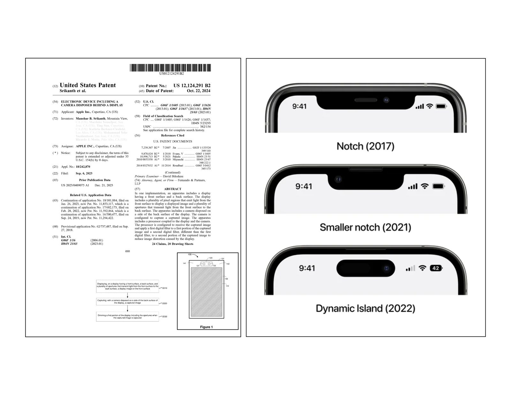

Manohar Srikanth
Invention of the Disappearing Camera
September 2026 — the iPhone Duo and iPhone 18 Pro Max shipped with the camera hidden beneath the display.
I didn't write about this invention. I invented it.

My under-display camera architecture. Granted 2024; priority 2018.

The Vision Pro passthrough system I co-invented.
Look closer
Can you find the camera?
An unbroken display. No notch, no hole — just your screen, edge to edge. This iPhone, photographed by iFixit’s teardown team, hides its camera underneath it.

Images: iFixit
Why it matters
Beauty worth engineering for.
The best display is the one you never notice — no cutout splitting your video, no notch intruding on the frame. But a display is opaque by nature. To make it disappear around a camera took real invention: the display had to learn to yield where the lens sees, and the camera had to learn to see through the display.
No notch. No hole.
Your photos, your video, your FaceTime calls — filling the whole glass, with nothing between you and them.
The display gives way.
Above the lens, the display thins into an engineered opening — pixel rows yield, density transitions around the edge.
The camera looks through.
Light reaching the sensor carries the display’s fingerprint; computational restoration reconstructs the image pixel by pixel.
The invention
Eleven years in the making.
The foundational under-display-camera patent was conceived by Manohar Srikanth, first-listed of six inventors — an 11-year arc from founding Apple’s Vision Products Group to the technology shipping in flagships. The family claims priority to September 27, 2018 — two years before the first commercial under-display-camera phone — and was filed September 24, 2019.
- 2015Founding member of Apple’s Vision Products Group, June 2015 — the team that incubated the Vision Pro.
- 2016In his words: “I built a camera that vanished behind the screen — before the world knew it was possible.”
- 2018Provisional priority, September 27 — the 0-to-1 under-display-camera architecture. Two years before the first commercial under-display-camera phone, the ZTE Axon 20 (September 2020).
- 2022Patent granted, April 5: “Electronic device including a camera disposed behind a display.”
- 2026Shipped — in the iPhone Duo’s hidden FaceTime camera and the iPhone 18 Pro Max’s under-display Face ID camera.
Foresight is pattern, not luck: in 2014, as a Senior Researcher at Nokia, he co-invented a multi-camera bokeh architecture (WO2016097470A1, priority December 15, 2014, with Ting-Chun Wang) — two years before Portrait mode arrived on the iPhone 7 Plus. At Pelican Imaging, he was first-listed inventor on the depth-regularization patent (WO2015134996A1, priority March 7, 2014).
How it works
Light finds a way.
Three ideas, one invisible camera. The iFixit teardown confirmed the hardware half; the patent describes the whole architecture.
The display opens.
Display pixels above the camera are thinned into an opening — iFixit found every other row absent, density transitioning around the edge.
Infrared passes through.
An IR-pass layer beneath the OLED admits infrared and blocks visible light — the “eclipse” iFixit photographed under the microscope.
Software completes the image.
Spatially-varying computational restoration, tuned with PSF-derived filters, reconstructs what the display took from the light.
“Electronic device including a camera disposed behind a display.” Manohar B. Srikanth, first-listed of six inventors · assignee Apple Inc. · provisional priority Sep 27, 2018 · filed Sep 24, 2019 · granted Apr 5, 2022. Family continues: US 11,592,864 → US 11,853,117 → US 12,124,291.
Cited by the field
Later filings from Samsung Display, Samsung Electronics, Google, Sony, Qualcomm, LG Display, Leica, Microsoft, and Fraunhofer cite patents in this family.
Citations indicate relevance, not commercial dependence.
Precision: on the iPhone 18 Pro Max, only the Face ID infrared camera moved beneath the OLED — the selfie camera and IR dot projector stayed in the central opening. The iPhone Duo’s hidden FaceTime camera sits beneath the inner display.
There’s more to the story.
The teardown that proves it. The career that made it possible. The person behind the patents.
Read the full story